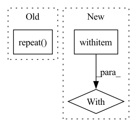

Pattern ID :2819
Before Change
tfds.as_numpy(trains_ds.cache().repeat().shuffle(
10 * batch_size, seed=0).batch(batch_size)))
val_ds = iter(
tfds.as_numpy(vals_ds.cache().repeat() .batch(
config.train.eval_batch_size)))
training.train_loop(config.train, FLAGS.workdir, train_ds, val_ds)After Change
writers=(getpass.getuser(),))
table = (f"/datatable/xid/{experiment.id}/predictions" if experiment.id > 0
else config.datatable)
with datatables .Writer(
table,
keys=[("index", int), ("id", str)],
fixed_key_values=[
config.index,
],
options=datatables.WriterOptions(acls=acls)) as writer:
trains_ds, vals_ds, train_ds_iterator, val_ds_iterator = (
create_datasets_iterators(config.num_splits, config.dataset_seed,
config.index, batch_size,
config.train.eval_batch_size))In pattern: SUPERPATTERN
Frequency: 3
Non-data size: 3
Instances Fragment ID: 11242985
Project Name: google/uncertainty-baselines
Commit Name: cb581a303749fa4e7f1a19422109627b3a6d61ea
Time: 2022-08-13
Author: no-reply@google.com
File Name: experimental/shoshin/cross_validated_ensemble_training.py
M Class Name: AnonimousClass
N Class Name: AnonimousClass
M Method Name: main(1)
N Method Name: main(1)
M Parent Class:
N Parent Class:
M File Name: experimental/shoshin/cross_validated_ensemble_training.py
N File Name: experimental/shoshin/cross_validated_ensemble_training.py
M Start Line: 42
M End Line: 63
N Start Line: 101
N End Line: 137
Before Change
// ------- classification loss -------
logits = torch.cat((logits1, logits2))
target = target.repeat( 2)
class_loss = F.cross_entropy(logits, target, ignore_index=-1)
// just add together the losses to do only one backward()
// we have stop gradients on the output y of the modelAfter Change
q1 = F.normalize(q1)
q2 = F.normalize(q2)
with torch .no_grad():
k1 = self.momentum_projector(feats1_momentum)
k2 = self.momentum_projector(feats2_momentum)
k1 = F.normalize(k1)
k2 = F.normalize(k2) Fragment ID: 11242983
Project Name: vturrisi/contrastive-learning
Commit Name: a47bb52eeeb836a919c105a9dcd27930c9124ec4
Time: 2021-06-14
Author: vt.turrisi@gmail.com
File Name: solo/methods/mocov2plus.py
M Class Name: MoCoV2Plus
N Class Name: MoCoV2Plus
M Method Name: training_step(3)
N Method Name: training_step(3)
M Parent Class: BaseMomentumModel
N Parent Class: BaseModel
M File Name: solo/methods/mocov2plus.py
N File Name: solo/methods/mocov2plus.py
M Start Line: 107
M End Line: 152
N Start Line: 82
N End Line: 112
Before Change
tensor_to_plot = torch.cat([self.fake_B, self.real_B], 3)
img = vutils.make_grid(tensor_to_plot)
vutils.save_image(tensor_to_plot, basename + "_construct.png")
self.set_input(torch.randn(1, self.embedding_dim).repeat( batch[0].shape[0], 1) , batch[2], batch[1])
self.forward()
tensor_to_plot = torch.cat([self.fake_B, self.real_A], 3)
vutils.save_image(tensor_to_plot, basename + "_generate.png")After Change
// net.eval()
def sample(self, batch, basename):
with torch .no_grad():
self.set_input(batch[0], batch[2], batch[1])
self.forward()
tensor_to_plot = torch.cat([self.fake_B, self.real_B], 3)
img = vutils.make_grid(tensor_to_plot) Fragment ID: 11242982
Project Name: euphoriayan/zi2zi-pytorch
Commit Name: d18cdce2416d812c3944db8aef913e06879b022b
Time: 2020-06-29
Author: ysq58000@foxmail.com
File Name: model/model.py
M Class Name: Zi2ZiModel
N Class Name: Zi2ZiModel
M Method Name: sample(3)
N Method Name: sample(3)
M Parent Class:
N Parent Class:
M File Name: model/model.py
N File Name: model/model.py
M Start Line: 204
M End Line: 212
N Start Line: 215
N End Line: 227